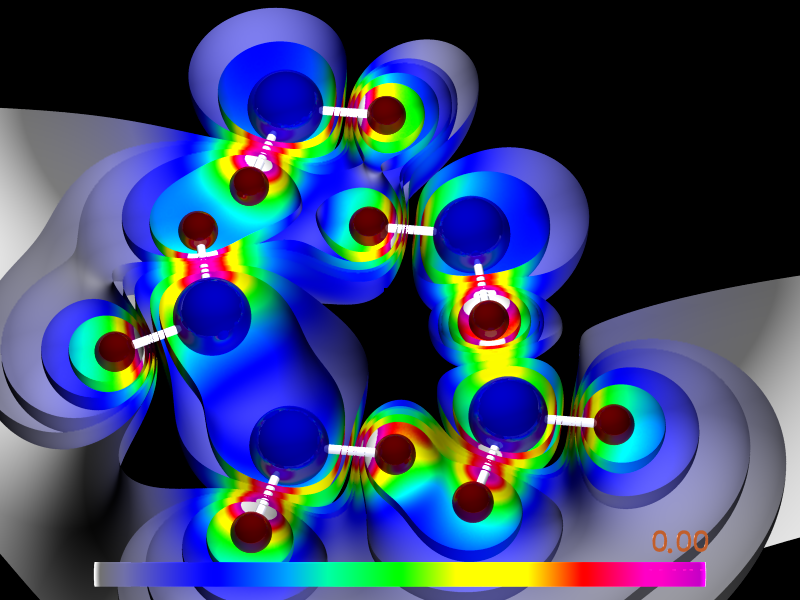

TABLE OF CONTENTS
ScPovPlot3D/Structures.inc [ Modules ]
PURPOSE
Very important toolkit defining some handy ... TODO: still a lot! Several useful ....... This library silently includes system library file(s) .... and

Fig.[H2O] Scene employing finishes declared in this library
VERSION
3.2.0.2, tested on PovRay 3.7.
AUTHOR
Janusz Opi³a Ph.D.
jmo{at}agh.edu.pl, janusz.opila{at}gmail.com
Dept. of Applied Informatics,
https://www.facebook.com/KatedraInformatykiStosowanejWZAGH/
http://kis.zarz.agh.edu.pl/
AGH University of Science & Technology, Cracow, Poland http://www.zarz.agh.edu.pl/English/index.asp
Maintained by Janusz Opi³a‚a Ph.D.
Homepage: http://scpovplot3d.sourceforge.net
HISTORY
2016-01-29/3.2.0.1 - macro ArMerge () added
COPYRIGHT
GNU GPL v.3 License (c) 2012-now by Janusz Opi³a‚a Ph.D. AGH University of Science and Technology
Structures.inc/BndMerge [ Main macros ]
[ Top ] [ Structures.inc ] [ Main macros ]
PURPOSE
Merges two bonds structures
SYNOPSIS
#macro BndMerge(_A, _B, _S)
INPUTS
garray - base data structure garray - data structure appended uinteger - number of ATOMS in base structure, referred by bonds in matrix _A
OUTPUTS
garray - merged structure, ex. use: #declare A = StrMerge(A, B); #declare A = StrMerge(C, B);
SEE ALSO
Structures.inc/CreateStruct [ Main macros ]
[ Top ] [ Structures.inc ] [ Main macros ]
PURPOSE
Makes POVRay ready object
SYNOPSIS
#macro CreateStruct (_PTs, _BNs, _D) // molecules table, bonds table, base diameter of bond, may be modified due to bondage type
INPUTS
garray - structure garray - bonds
OUTPUTS
POVRay object ready to render
SEE ALSO
StrTrans, StrMerge, StrRotate, BndMerge, ArMerge
Structures.inc/StrMerge [ Main macros ]
[ Top ] [ Structures.inc ] [ Main macros ]
PURPOSE
Merges two molecule or bonds structures
SYNOPSIS
#macro StrMerge(_A, _B)
INPUTS
garray - base data structure garray - data structure appended
OUTPUTS
garray - merged structure, ex. use: #declare A = StrMerge(A, B); #declare A = StrMerge(C, B);
SEE ALSO
Structures.inc/StrRotate [ Main macros ]
[ Top ] [ Structures.inc ] [ Main macros ]
PURPOSE
Rotates given array _A around given axis _V by amount _deg degrees
SYNOPSIS
#macro StrRotate ( _A, _V, _deg )
INPUTS
garray - data structure to operate on 3Dvector - rotation axis (might be: x, y, z, x+y, <1,2,1.>) float - rotation amount in degrees
OUTPUTS
garray - rotated structure
SEE ALSO
Structures.inc/StrTrans [ Main macros ]
[ Top ] [ Structures.inc ] [ Main macros ]
PURPOSE
Rotates given array
SYNOPSIS
#macro StrTrans(_A, _V)
INPUTS
garray - data structure to operate on 3Dvector - rotation axis (might be: x, y, z, x+y, <1,2,1.>) float - rotation amount in degrees
OUTPUTS
garray - rotated structure
SEE ALSO
Structures.inc/ArMerge [ Helper macros ]
[ Top ] [ Structures.inc ] [ Helper macros ]
PURPOSE
general double index array (KxN and LxN) merger _A[K][N]+_B[L][N]
SYNOPSIS
#macro ArMerge(_A, _B) //
INPUTS
garray - base data structure garray - data structure appended
OUTPUTS
garray - merged structure, ex. use: #declare A = StrMerge(A, B); #declare A = StrMerge(C, B);
SEE ALSO